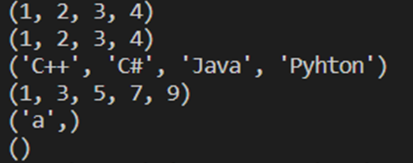

Tuples ในภาษา Python
ในบทนี้ คุณจะได้เรียนรู้เกี่ยวกับ Tuple ในภาษา Python และทำความรู้จักกับว่า Tuple คืออะไร เราจะพูดถึงการสร้างและใช้งาน Tuple และตอนที่จะต้องใช้งานในการเขียนโปรแกรม นอกจากนี้ เรายังจะพูดถึงการใช้งานเมธอดและฟังก์ชันต่างๆ ของ Tuple
ในการเขียนโปรแกรมภาษา Python นั้น Tuple จะคล้ายกับ List แต่สิ่งที่แตกต่างกันคือ Tuple นั้นเป็นประเภทข้อมูลที่ไม่สามารถเปลี่ยนแปลงได้ (Immutable) หรือกล่าวอีกนัยหนึ่ง หลังจากที่ประกาศตัวแปรและกำหนดค่าให้กับ Tuple แล้ว มันจะไม่สามารถเปลี่ยนแปลงค่าได้ในภายหลัง ในขณะที่ List สามารถทำได้ เนื่องจากว่า Tuples นั้นไม่สามารถเปลี่ยนแปลงค่าได้ ดังนั้นมันจึงมักจะใช้เก็บข้อมูลที่มีประเภทแตกต่างกันซึ่งจะทำงานได้ดีกว่า List และในการใช้งาน Loop กับ Tuple จะเพิ่มความเร็วขึ้นเล็กน้อย นอกจากนี้เรายังสามารถใช้ Tuple เป็นค่าคงที่สำหรับข้อมูลที่ไม่ต้องการให้เปลี่ยนแปลงได้
การประกาศ Tuple ในภาษา Python
ในภาษา Python การประกาศ Tuple นั้นสามารถทำได้หลายวิธี รูปแบบพื้นฐานของมันคือสมาชิกของ Tuple ทุกตัวจะอยู่ภายในวงเล็บ ()
และคั่นสมาชิกแต่ละตัวด้วยเครื่องหมายคอมมา (,) นี่เป็นตัวอย่างของการประกาศ Tuple ในรูปแบบต่างๆ
ในตัวอย่าง เป็นการประกาศ Tuple ในตัวแปร a และ b เป็นรูปแบบมาตฐานในการประกาศ Tuple แต่ในตัวแปร b นั้นจะเป็นรูปแบบสั้นซึ่งไม่แนะนำสำหรับการฝึกปฏิบัติที่ดี และในตัวแปร c และ d นั้นเป็นการสร้าง Tuple ด้วยการใช้ฟังก์ชัน tuple() โดยสร้างจาก List หรือออบเจ็คที่สามารถวนรอบได้ (Iterable) จากฟังก์ชัน range()
และในตัวแปร e นั้นเป็นการประกาศ Tuple ที่มีสมาชิกเพียงตัวเดียวจะต้องใส่คอมมา (,) ต่อท้ายให้กับสมาชิกเสมอ เพราะไม่เช่นนั้นตัวแปรดังกล่าวจะเป็น String แทน และในตัวแปรสุดท้าย f เป็นการประกาศ Tuple ว่างเปล่า หลังจากนั้นเราแสดงผลค่าของ Tuple ออกทางหน้าจอ
นี่เป็นผลลัพธ์การทำงานของโปรแกรม ในการประกาศ Tuple ในรูปแบบต่างๆ และแสดงผลออกทางหน้าจอ
การเข้าถึงสมาชิกภายใน Tuple
ในการเข้าถึงสมาชิกภายใน Tuple นั้นจะใช้ Index เช่นเดียวกับ List โดยสมาชิกตัวแรกจะมี Index เป็นศูนย์ และสำหรับสมาชิกตัวต่อไปจะเพิ่มขึ้นทีละ 1 Tuple
มักจะใช้กับประเภทข้อมูลที่แตกต่างกันและสมาชิกของมันจะไม่สามารถเปลี่ยนแปลงค่าได้ นั่นคือ Tuple สามารถอ่านได้เพียงอย่างเดียว มาดูตัวอย่างการอ่านค่าของ Tuple ในภาษา Python
ในตัวอย่าง เป็นการเข้าถึงสมาชิกใน Tuple เพื่ออ่านค่าภายใน ตัวแปร numbers นั้นเป็น Tuple ที่มีสมาชิกเป็นเพียงตัวเลข Integer เราเข้าถึงสมาชิกตัวแรกของมันด้วย numbers[0] และสมาชิกตัวที่สี่ด้วย numbers[3] เราสามารถใช้ Index เป็นจำนวนเต็มลบได้ โดยเริ่มตั้งแต่ -1 ซึ่งเป็นสมาชิกตัวสุดท้ายใน Tuple
ต่อไปเป็นการประกาศตัวแปร mixed_type ซึ่งประกอบไปด้วยข้อมูลประเภทต่างๆ เช่น ตัวเลข String และ List และเราเข้าถึงสมาชิกผ่านทาง Index เช่นเดิม สำหรับ Sequence ที่ซ้อนกัน เราจะใช้รูปแบบ Index ของการเข้าถึงเป็น [m][n] เหมือนในคำสั่ง mixed_type[3][0]
นี่เป็นผลลัพธ์การทำงานของโปรแกรม ในการอ่านค่าสมาชิกภายใน Tuple
การอ่านค่าใน Tuple ด้วยคำสั่ง For loop
เนื่องจาก Tuple นั้นเป็นข้อมูลแบบ Sequence เช่นเดียวกับ List ดังนั้นมันจึงสะดวกที่จะใช้คำสังวนซ้ำ เช่น For loop เพื่อวนอ่านข้อมูลใน Tuple มาดูตัวอย่างการอ่านค่าสมาชิกของ Tuple
ด้วยการใช้คำสั่ง For loop ในภาษา Python
ในตัวอย่าง เป็นการใช้ For loop เพื่อวนอ่านค่าใน Tuple ในลูปแรกเป็นการวนอ่านค่าในตัวแปร numbers แบบทีละค่าด้วยการใช้คำสั่ง in ในการวนแต่ละรอบโปรแกรมจะนำค่าภายใน Tuple มาเก็บไว้ในตัวแปร n ในลูปที่สองเป็นการใช้ For loop เพื่อสร้าง Index ตั้งแต่ 0 ถึงตัวสุดท้ายและเข้าถึงค่าของ Tuple ผ่านทาง Index ของมัน
นี่เป็นผลลัพธ์การทำงานของโปรแกรม ในการวนอ่านค่าใน Tuple ด้วยการใช้คำสั่ง For loop
Tuple slicing
ในการทำงานกับ Tuple เราสามารถแบ่งมันออกเป็นส่วนย่อยๆ ได้เช่นเดียวกับ List ด้วยวิธีการที่เรียกว่า Slicing โดยปกติแล้วมันมักจะใช้สำหรับคัดลอกข้อมูลจาก Tuple เดิมเพื่อสร้างอันใหม่
ซึ่งการ slice นั้นจะทำในรูปแบบของ Index ของ Tuple [start:end] มาดูตัวอย่าง
ในตัวอย่าง เป็นการตัดแบ่ง Tuple เพื่อนำมาสร้างอันใหม่ด้วยการ Slice เรามีตัวแปร n ที่เก็บข้อมูลที่เป็นตัวเลขและ String โดยจะแบ่งย่อยออกเป็นภาษาเขียนโปรแกรมและชื่อของประเทศรวมกันอยู่ภายในตัวแปรเดียว

ในสามตัวแปรแรก นั้นเป็นการ Slice โดยรูปแบบปกติคือการกำหนด Index เริ่มต้นและ Index สิ้นสุดของการตัดแบ่งข้อมูล ยกตัวอย่างเช่นในคำสั่ง n[0:4] นั้นเป็นการตัดเอาข้อมูลใน Tuple จากตำแหน่งที่ 0 ถึง 3 (ไม่รวม 4) ที่เป็นข้อมูลแบบตัวเลขในตัวแปร n แล้วคัดลอกไปใส่ในตัวแปร numbers หลังจากนั้นเป็นการตัดเอาชื่อของภาษาเขียนโปรแกรมและตามด้วยชื่อของประเทศ ตามลำดับ
ในอีกสามคำสั่งต่อมาเป็นการตัดโดยการเว้น Index ข้างหน้าหรือข้างหลังไว้ ถ้าหากมีการเว้นข้างหน้าไว้โปรแกรมจะตัดจากสมาชิกตัวแรกของ Tuple และหากเว้นข้างหลังไว้จะเป็นการตัดเอาจนถึงตัวสุดท้ายของ Tuple
นี่เป็นผลลัพธ์การทำงานของโปรแกรม ในการตัดข้อมูลจาก Tuple ด้วยการ Slice
Python Tuple methods
เนื่องจากค่าของ Tuple นั้นไม่สามารถแก้ไขได้ ดังนั้นมันจึงมีเมธอดน้อยกว่าที่ List มี คือเมธอด count() ใช้สำหรับนับจำนวนออบเจ็คใน Tuple และเมธอด index() ใช้สำหรับหาตำแหน่งแรกของออบเจ็คใน Tuple
มาดูตัวอย่างการใช้เมธอดของ Tuple ในภาษา Python
ในตัวอย่าง เป็นการใช้งานเมธอดของ Tuple เรามีตัวแปร languages สำหรับเก็บชื่อของภาษาเขียนโปรแกรม และเราใช้เมธอด count() เพื่อนับว่าพบ 'Python' กี่อันภายใน Tuple และเมธอด index() ใช้สำหรับหา Index ของออบเจ็คภายใน Tuple
นี่เป็นผลลัพธ์ของโปรแกรมในการใช้งานเมธอดของ Tuple ในภาษา Python
Python Tuple functions
ในภาษา Python นั้นมีฟังก์ชันต่างๆ สำหรับทำงานกับ Sequence โดยทั่วไปแล้ว List และ Tuple นั้นจะสามารถใช้งานฟังก์ชันเหล่านี้ได้เหมือนกัน นี่เป็นตารางของ built-in function ของ Tuple
ในบทนี้ คุณได้เรียนรู้เกี่ยวกับออบเจ็คที่ไม่สามารถเปลี่ยนแปลงค่าได้ Tuple การสร้างและใช้งาน Tuple ในภาษา Python การเข้าถึงสมาชิกของมัน และการแบ่งข้อมูลโดยการ Slice เพื่อแยกข้อมูลจาก Tuple เดิมให้เป็นอันใหม่ เราได้แนะนำให้คุณรู้จักกับเมธอดใน Tuple พร้อมทั้งตัวอย่างการใช้งาน และ built-in functions ของ Tuple